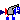
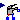
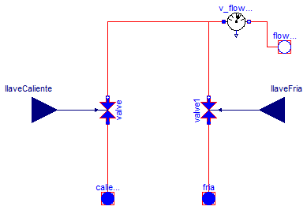
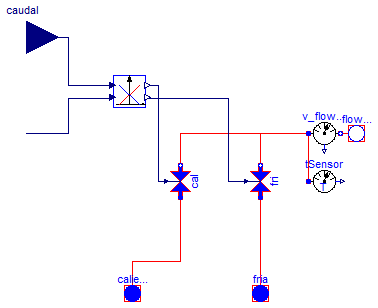

| Name | Description |
|---|---|
| Ejemplos y modelos de verificacion de los distintos tipos de griferias | |
|  Monoblock | Modelo de griferia tradicional monoblock |
|  Monomando | Modelo de griferia monomando |

| Type | Name | Default | Description |
|---|---|---|---|
| Medium | medium | Modelica.Thermal.FluidHeatFl... | |
| Pressure | dp_grifo | 1 | [Pa] |
| Real | Kv_grifo | 1 | |
| Density | rho_referencia | 995.6 | [kg/m3] |
| Type | Name | Description |
|---|---|---|
| FlowPort_a | caliente | |
| FlowPort_a | fria | |
| input RealInput | llaveCaliente | |
| input RealInput | llaveFria | |
| FlowPort_b | flowPort_b |
model Monoblock "Modelo de griferia tradicional monoblock"
Modelica.Thermal.FluidHeatFlow.Interfaces.FlowPort_a caliente(final medium=
medium);
Modelica.Thermal.FluidHeatFlow.Interfaces.FlowPort_a fria(final medium=medium);
Modelica.Thermal.FluidHeatFlow.Components.Valve valve(
final medium=medium,
final Kv1=Kv_grifo,
final dp0=dp_grifo,
final rho0=rho_referencia,
kv0=0.00001);
Modelica.Thermal.FluidHeatFlow.Components.Valve valve1(
final medium=medium,
final Kv1=Kv_grifo,
final dp0=dp_grifo,
final rho0=rho_referencia,
kv0=0.00001);
Modelica.Blocks.Interfaces.RealInput llaveCaliente;
Modelica.Blocks.Interfaces.RealInput llaveFria;
Modelica.Thermal.FluidHeatFlow.Interfaces.FlowPort_b flowPort_b(final medium=
medium);
parameter Modelica.Thermal.FluidHeatFlow.Media.Medium medium=Modelica.Thermal.FluidHeatFlow.Media.Medium();
parameter Modelica.SIunits.Pressure dp_grifo=1;
parameter Real Kv_grifo=1;
parameter Modelica.SIunits.Density rho_referencia=995.6;
Modelica.Thermal.FluidHeatFlow.Sensors.V_flowSensor v_flowSensor(final medium
=medium);
equation
connect(llaveCaliente, valve.y);
connect(caliente, valve.flowPort_a);
connect(fria, valve1.flowPort_a);
connect(llaveFria, valve1.y);
connect(valve.flowPort_b, v_flowSensor.flowPort_a);
connect(valve1.flowPort_b, v_flowSensor.flowPort_a);
connect(v_flowSensor.flowPort_b, flowPort_b);
connect(flowPort_b, flowPort_b);
end Monoblock;

La grifería monomando dispone de dos entradas de caudal, una de agua caliente y otra de agua fría, y una salida a consumo.
El modelo incluye dos señales de entrada correspondiente al porcentaje de caudal y a la regulación de temperatura.
La señal de caudal tiene un rango 0 a 1. La señal de temperatura tiene un rango de 1 a -1, correspondiendo los valores positivos a un mayor porcentaje de agua caliente y viceversa.
El siguiente gráfico explica de manera ilustrativa como varían los poncentajes de ambos caudales en función de la señal de temperatura:

| Type | Name | Default | Description |
|---|---|---|---|
| Medium | medium | Modelica.Thermal.FluidHeatFl... | Fluido de trabajo |
| Pressure | dp_grifo | 1 | Caida de presion nominal [Pa] |
| Real | Kv_grifo | 1 | Coeficiente de caudal de la valvula. Caudal para una determinada caida de presion nominal |
| Density | rho_referencia | 995.6 | Densidad de referencia para el calculo de caudal [kg/m3] |
| Type | Name | Description |
|---|---|---|
| FlowPort_a | caliente | Entrada de agua caliente |
| FlowPort_a | fria | Entrada de agua fria de red |
| FlowPort_b | flowPort_b | Salida a consumo |
| input RealInput | caudal | Senal de entrada de regulacion de cuadal |
| input RealInput | temperatura | Senal de entrada de regulacion de temperatura |
model Monomando "Modelo de griferia monomando"
Modelica.Thermal.FluidHeatFlow.Interfaces.FlowPort_a caliente(
final medium=medium) "Entrada de agua caliente";
Modelica.Thermal.FluidHeatFlow.Interfaces.FlowPort_a fria(
final medium=medium) "Entrada de agua fria de red";
Modelica.Thermal.FluidHeatFlow.Interfaces.FlowPort_b flowPort_b(
final medium=medium) "Salida a consumo";
Modelica.Thermal.FluidHeatFlow.Components.Valve cal(
final medium=medium,
final Kv1=Kv_grifo,
final dp0=dp_grifo,
final rho0=rho_referencia,
kv0=0.00001);
Modelica.Thermal.FluidHeatFlow.Components.Valve fri(
final medium=medium,
final Kv1=Kv_grifo,
final dp0=dp_grifo,
final rho0=rho_referencia,
kv0=0.00001);
Modelica.Blocks.Interfaces.RealInput caudal
"Senal de entrada de regulacion de cuadal";
Modelica.Blocks.Interfaces.RealInput temperatura
"Senal de entrada de regulacion de temperatura";
Modelica.Thermal.FluidHeatFlow.Sensors.V_flowSensor v_flowSensor(
final medium=medium);
ClasesBasicas.ControlesEquipos.Control_Monomando control_Monomando;
Modelica.Thermal.FluidHeatFlow.Sensors.TSensor tSensor(final medium=medium);
parameter Modelica.Thermal.FluidHeatFlow.Media.Medium medium=Modelica.Thermal.FluidHeatFlow.Media.Medium()
"Fluido de trabajo";
parameter Modelica.SIunits.Pressure dp_grifo=1 "Caida de presion nominal";
parameter Real Kv_grifo=1
"Coeficiente de caudal de la valvula. Caudal para una determinada caida de presion nominal";
parameter Modelica.SIunits.Density rho_referencia=995.6
"Densidad de referencia para el calculo de caudal";
equation
connect(caliente, cal.flowPort_a);
connect(fria, fri.flowPort_a);
connect(v_flowSensor.flowPort_b, flowPort_b);
connect(cal.flowPort_b, v_flowSensor.flowPort_a);
connect(fri.flowPort_b, v_flowSensor.flowPort_a);
connect(control_Monomando.SenalCaliente, cal.y);
connect(control_Monomando.SenalFria, fri.y);
connect(tSensor.flowPort, v_flowSensor.flowPort_a);
connect(caudal, control_Monomando.SenalCaudal);
connect(temperatura, control_Monomando.SenalTemperatura);
end Monomando;